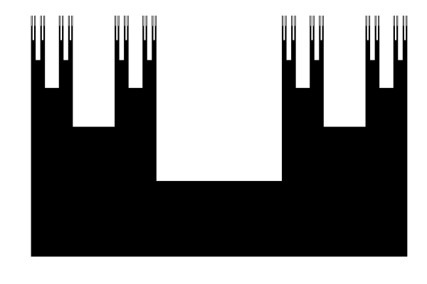

Piecewise
Installation
The package can be installed with Pkg.add.
using Pkg; Pkg.add("Piecewise")Introduction
A piecewise function of a real variable $x$ returns a value computed with a formula that depends on the interval in which $x$ lies. The Julia module Piecewise represents such a function as a collection of pieces. Each piece is an object of type Piece that contains an interval and a rule to compute a value, given $x$. The rule is expressed by formulas, that are contained in objects of type Formula.
In mathematical terms, a piecewise function can be written as
\[ f(x) = \sum_i \underbrace{\theta\left(x-x_i^{\min}\right)\theta\left(x_i^{\max}-x\right) \underbrace{\sum_j \underbrace{F_{ij}(x, \mathbf{a}_{ij})} _{\text{formula}}} _{\text{rule}}} _{\text{piece}},\]
where $\theta(x)$ is the Heaviside step function. The functions $F(x, \mathbf{a})$ are the formulas, that take a set of parameters $\mathbf{a}$. The Formula object holds the function $F$ together with constraints regarding its applicability with the parameters $\mathbf{a}$ in a given interval. The quantity $\sum_jF_{ij}(x, \mathbf{a}_{ij})$ is the rule that computes the value, given $x$ [1]. The parameters $\mathbf{a}$ are in general different in each piece, but the function $F$ may be the same. For instance, the cubic-spline interpolation of a dataset could be represented as a PiecewiseFunction object in which all formulas are 3rd-order polynomials $F(x, \mathbf{a}_i) = a_{i1}+a_{i2}x+a_{i3}x^2+a_{i4}x^3$. The piece contains the rule and the interval defined by $x_i^{\min}$ and $x_i^{\max}$.
Typical use
Encoding computer-intensive functions
Consider a function $f(x)$ that is computationally intensive. If formulas $F(x, \mathbf{a})$ exist, that can approximate $f(x)$ in restricted domains to a high accuracy, then $f(x)$ can be encoded in a fast PiecewiseFunction object. This is useful if the function $f(x)$ is just one part of a bigger calculation that requires computing $f(x)$ many times. The use of arbitrary functions as formulas allows one to represent behaviors, such as power laws or neighborhood of singularities, that are not well described by polynomial interpolations.
The module Piecewise provides the method piecewisefit for constructing a piecewise approximation of a real-valued function $f(x)$ to a user-specified accuracy, using user-specified formulas.
Fast integral transforms
A piecewise representation of $f(x)$ with well-chosen formulas enables one to perform fast integral transforms of $f$. An integral transform with kernel $K$ is defined as
\[ (K\circ f)(\mathbf{X}) = \int_{-\infty}^{\infty}dx\,f(x) K(x, \mathbf{X}),\]
where $\mathbf{X}$ represents a variable or a set of variables and $K(x, \mathbf{X})$ is the kernel. If $f(x)$ can be accurately piecewise-approximated by formulas $F(x, \mathbf{a})$ for which continuous primitive functions $\mathcal{F}_K(x, \mathbf{a}, \mathbf{X})$ over the kernel $K$ are known, i.e,
\[ \frac{d}{dx}\mathcal{F}_K(x, \mathbf{a}, \mathbf{X}) = F(x, \mathbf{a}) K(x, \mathbf{X}),\]
then the integral transform can be immediately evaluated as
\[ (K\circ f)(\mathbf{X}) = \sum_i \theta\left(x-x_i^{\min}\right)\theta\left(x_i^{\max}-x\right) \sum_j\left[{\mathcal{F}_K}_{ij}(x_i^{\max}, \mathbf{a}_{ij}, \mathbf{X}) - {\mathcal{F}_K}_{ij}(x_i^{\min}, \mathbf{a}_{ij}, \mathbf{X})\right].\]
A simple example of kernel is $K(x,n)=x^n$, which provides the $n$-th moment of the function $f(x)$ defined as $(M\circ f)(n) = \int_{-\infty}^{\infty}dx\,f(x)x^n$. Other important examples include the Fourier transform with $K(x, k)=e^{-ikx}$ for $k\in\mathbb{R}$, the Laplace transform with $K(x, s)=\theta(x)e^{-sx}$ for $s\in\mathbb{C}$, or the Hilbert transform with kernel $K(x, z)=1/(z-x)$ for $z\in\mathbb{C}\setminus\mathbb{R}$, which also yields the Kramers-Kronig transform.
The module Piecewise provides a generic integral transform that can work with user-defined primitives $\mathcal{F}_K(x, \mathbf{a}, \mathbf{X})$. It also provides several Formula objects with primitives for the kernel $x^n$ (see Formulas). The module PiecewiseHilbert adds to these formulas the primitives needed for the Hilbert transform. The module PiecewiseLorentz adds the primitives needed for what we call the Lorentz transform.
Types
PiecewiseFunction
A piecewise function can be initialized as:
f = PiecewiseFunction([parity,] pieces)Once initialized, the piecewise function can be evaluated as f(x). The optional argument parity can be either :none (default), :even, or :odd. If :even or :odd parities are specified, the piecewise function evaluates according to $f(x<0) = \pm f(-x)$, respectively [2]. The argument pieces is an object of type Piece or an array of such objects.
Arithmetic operations with scalars are possible, e.g., s + f or s * f yield new piecewise functions appropriately transformed. Two piecewise functions can be merged by adding them with + (or sum() for an array).
Piece
A piece is characterized by a domain and a rule to return a value. This rule is an object of type Formula or an array of such objects, accompanied by parameters:
p = Piece(domain[, included], rule, parameters)The argument domain::Tuple{Real, Real} with domain[1] <= domain[2] specifies the domain of the piece. The optional argument included::Tuple{Bool, Bool}, by default (true, true), indicates whether the domain boundaries are included in the domain (see Domains and boundaries). If the argument rule is of type Formula, the argument parameters must be of type Vector{Any}, while if rule is of type Vector{Formula}, parameters must be of type Vector{Vector{Any}}. When several formulas are provided, the rule is the sum of all formulas [1].
A piece can also be initialized with a single function as
p = Piece(domain[, included], function)The argument function is a function with interface function(::Real). It can also be passed as a string representing an anonymous function. This method of initialization is equivalent to p = Piece(domain, [included,] Formula(2, (x, a) -> a[2] * function(a[1] * x)), [1.0, 1.0]). The parameters a[1] and a[2] are added for the function to behave correctly under the default scaling and mirroring (see Formula).
Formula
An object of type Formula is created as
F = Formula([name,] params, value[, check][, scale][, mirror])The optional argument name::String is used for printout purposes. In particular, it allows the method format to replace the function by its name. The argument params::Integer specifies the number of parameters in the formula. If it is positive, the formula takes exactly params parameters; if it is negative, the formula takes at most -param parameters. This allows one to define formulas using functions with an unspecified number of parameters, as e.g. polynomials of various orders (see POLY and piecewisefit). The argument value::Function is a function with interface value(x::Real, a::Vector{Any}) that returns a value given x and the array of parameters a. If value is an anonymous function, the code defining that function is not stored in the Formula object and thus cannot be printed by the method format. For that reason, it is also possible to pass value as a string representing an anonymous function.
The optional argument check::Function is a function defined as check(a, domain, included, danger, fatal). This function must return true if the parameters a can be used in the function value(x, a) for x in the domain specified by the arguments domain and included (see Piece), and false otherwise. The arguments danger::Bool and fatal::Bool should be used to switch on and off warning and error messages, respectively (see Example in Formula). By default, check = (a, domain, included, danger, fatal) -> true, which means that no check is performed.
The optional argument scale::Function is a function with interface scale(a::Vector{Any}, s::Number) that returns the parameters of the formula after multiplication by the scalar s. By default, scale = (a, s) -> [a[1:end-1]..., a[end] * s], which means that only the last parameter is scaled. The optional argument mirror::Function is a function with interface mirror(a::Vector{Any}) that returns the parameters of the formula after even reflection through $x=0$. By default, mirror = a -> [-a[1], a[2:end]...], which means that the first parameter is negated and the others are unchanged.
Domains and boundaries
The following rules determine which value is returned by the method PiecewiseFunction(x).
- The value
0is returned ifxdoes not belong to any of the domains defined inPiecewiseFunction.pieces, with two exceptions:- The value
Infis returned ifxcoincides with the common boundary of two domains (this boundary being excluded from both domains) and if the rules forx-ϵandx+ϵboth yield positive values, whereϵ = 10 * eps(Float64)[3]. - The value
-Infis returned in the same situation if the rules forx-ϵandx+ϵboth yield negative values [3].
- The value
- If
xcoincides with the common boundary of two domains and if this boundary is included in both domains, the rule of the leftmost domain is used. - If
xfalls inside the domain of a piece, the rule of that piece is used.
Main methods
integraltransform
A function returning the integral transform of the piecewise function f may be created as:
Kof(X) = integraltransform(f::PiecewiseFunction, X::Any)This assumes that for each Formula object F used in the pieces of f, there is a method F.value(x::Real, a::Vector{Any}, X::Any) returning the primitive of F.value(x, a) * K(x, X) for the kernel K of interest (see Fast integral transforms). If the function f is :even or :odd, the method integraltransform requires instead a method F.value(s, x::Real, a::Vector{Any}, X::Any) with s = 1 or s = -1, respectively, which returns the primitive of F.value(x, a) * (K(x, X) + s * K(-x, X)).
moment
The moment of order $n$ of the piecewise function f may be obtained as
m = moment(f::PiecewiseFunction, n::Integer)This assumes that for each Formula object F used in the pieces of f, there is a method F.value(x::Real, a::Vector{Any}, n::Integer) returning the primitive of F.value(x, a) * x^n. The argument n must be a non-negative integer.
piecewisefit
Given a function $g(x)$, a PiecewiseFunction object approximating this function can be constructed as:
f = piecewisefit(g, domain, formulas; kwargs...)The argument g(::Real) is the function to approximate. The algorithm tries to fit any linear superposition of the formulas given in the argument formulas::Vector{Formula} to $g(x)$ in the domain specified by the argument domain::Tuple{Real, Real}. The fit is successful if it matches the function within a specified tolerance and if the fitted parameters pass the tests implemented in the method F.check of each Formula object used. If the fit is unsuccessful, the domain is divided in two and the algorithm continues recursively in each sub-domain. The recursion uses the available threads, although the parallelism isn't optimal yet.
The argument formulas can hold several Formula objects with fixed number of parameters and at most one Formula object with a variable number of parameters. The formulas with fixed number of parameters are tried first, then the one with variable number of parameters, if any, progressively increasing the number of parameters up to the maximum number allowed. Then pairwise linear combinations are tried, and so on until one combination succeeds.
If the function $g(x)$ is noiseless, the algorithm should converge with relatively large sub-domains. If $g(x)$ has numerical noise, the algorithm will likely be trapped trying to piecewise-fit that noise. To avoid this, a minimal sub-domain size may be specified with the optional argument grain. If grain > eps(Float64), the algorithm returns the best possible fit in sub-domains of typical size grain. If no fit is successful, or if grain = eps(Float64), the algorithm returns a Piece object that uses either the function $g(x)$ if the optional argument loop is true, or a linear interpolation of $g(x)$ across the domain if it is false (default). On the other hand, relevant rapid variations of $g(x)$ may be missed by the algorithm, because it tries to minimize the number of calls to g(x). The optional argument resolution allows one to control how finely the function $g(x)$ is sampled.
Because piecewisefit operates independently in each piece, the fitted function $f(x)$ may display small discontinuities at the boundaries of the domains, despite $g(x)$ being continuous there. To try and enforce approximate continuity, sampling points are introduced at the boundaries to better constrain the fitting.
The optional keyword arguments are:
parity::Symbol: imposes a given parity (:evenor:odd) to thePiecewiseFunctionobject (by defaultparity = :none)singularities::Vector{Real}: values of $x$ that are treated as singularities, i.e., excluded from any sub-domain generated during the recursion (by defaultsingularities = [])cuts::Vector{Real}: values of $x$ that are forced to be piece boundaries (by defaultcuts = [])grain::Real: sub-domains of size smaller thangrainare not split further by the algorithm (by defaultgrain = eps(Float64))resolution::Real: no fit is accepted before sampling the function $g(x)$ in each sub-domain with at most a distanceresolutionbetween successive points (by defaultresolution = Inf)rtol::Real,atol::Real: a fit is successful ifabs(dg) < rtol * abs(g) + atol, wheredgare the residuals andgare the function values (by defaultrtol = 0,atol=eps(Float64))loop::Bool: iftrue, the returnedPiecewiseFunctionobject uses the function $g(x)$ in sub-domains where the fit fails, otherwise it uses a linear interpolation of $g(x)$ across the sub-domain (by defaultloop = false).
Example
The following example adds PiecewiseFunction objects to display the Cantor set.
# Rule to construct the set
cut(d) = [(d[1], d[1] + 1//3 * (d[2] - d[1])),
(d[1] + 2//3 * (d[2] - d[1]), d[2])]
set(n) = n == 0 ? [(0, 1)] : vcat(cut.(set(n - 1))...)
# Piecewise function at order n
cantor(n) = PiecewiseFunction([Piece(d, x -> exp(-n / 3)) for d in set(n)])
# Plot sum of piecewise functions
using Plots
# Define array x with all breakpoints
x = vcat(map(b -> [b - eps(Float64), b + eps(Float64)],
vcat(map(d -> [d[1], d[2]], set(6))...))...)
plot(x, sum([cantor(n) for n = 0:6]).(x),
f=(0, 0, :black), linewidth=0, axis=false, grid=false, legend=:none)
Formulas
The module Piecewise provides several Formula objects with appropriate primitives for computing the moments of a piecewise function. In the descriptions below, $x_{\min}$ and $x_{\max}$ refer to the boundaries of the domain in which the formula is used and ${_2F_1}(a,b,c,z)$ refers to the hypergeometric function. This function has a branch cut on the real axis $z=x\in\mathbb{R}$ for $x>1$. In all cases considered here, ${_2F_1}(a,b,c,x)$ refers to the value below the cut, i.e., ${_2F_1}(a,b,c,x-i0)$.
POLY | TAIL | LOG | ISRS | PLS | XLOG | XISRS
POLY
- Polynomial of varying order
- 1 to 13 parameters
The function POLY.value(x, a) is
\[F(x,\mathbf{a}) = \sum_{i=1}^k a_i x^{i-1},\]
where the number of parameters can vary in the range $1\leqslant k\leqslant 13$. The order of the polynomial is limited to 12 in order to reduce numerical instabilities. The parameters $a_i$ are unrestricted.
The primitive function for the moment of order $n$ is
\[\mathcal{F}(x,\mathbf{a},n) = \sum_{i=1}^k \frac{a_i}{i+n} x^{i+n}.\]
This primitive is continuous for $x\in\mathbb{R}$.
TAIL
- Rational function approaching zero as $1/x$ or $1/x^2$ at infinity
- 5 parameters
The function TAIL.value(x, a) is
\[F(x,\mathbf{a}) = \frac{a_1+a_2x}{a_3+a_4x+a_5x^2}.\]
The parameters must satisfy either $a_4^2-4a_3a_5 < 0$, such that the zeros of the denominator are not on the real axis, or they must ensure that the two zeros $x_{\pm}=\frac{1}{2a_5}\left(-a_4\pm\sqrt{a_4^2-4a_3a_5}\right)$ lie outside the domain.
The primitive function for the moment of order $n$ is
\[\begin{align*} \mathcal{F}(x,\mathbf{a},n) &= \frac{x^{n+1}}{2(n+1)a_3\Delta}\left\{ \left[2a_2a_3-a_1\left(a_4-\Delta\right)\right] {_2F_1}\left(1,n+1,n+2,\frac{-2a_5x}{a_4+\Delta}\right)\right.\\ &\quad\left.-\left[2a_2a_3-a_1\left(a_4+\Delta\right)\right] {_2F_1}\left(1,n+1,n+2,\frac{-2a_5x}{a_4-\Delta}\right)\right\}. \end{align*}\]
where $\Delta=\sqrt{a_4^2-4a_3a_5}$. Simpler expressions are used if, e.g., $a_3=0$. This primitive is continuous for $x\in\mathbb{R}$, except at the zeros $x=x_{\pm}$, if they are on the real axis.
LOG
- Logarithmic singularity
- 2 parameters
The function LOG.value(x, a) is
\[F(x,\mathbf{a}) = a_2\ln|x-a_1|.\]
The domain should not include the point $x=a_1$.
The primitive function for the moment of order $n$ is
\[\mathcal{F}(x,\mathbf{a},n) = \frac{a_2x^{n+1}}{(n+1)(n+2)a_1}\left[ (n+2)a_1\ln|x-a_1|+{_2F_1}\left(1,n+2,n+3,\frac{x}{a_1}\right)x\right].\]
A simpler expression is used if $a_1=0$. This primitive is continuous in any domain excluding $x=a_1$.
ISRS
- Inverse square-root singularity
- 2 parameters
The function ISRS.value(x, a) is
\[F(x,\mathbf{a}) = \frac{a_2}{\sqrt{|x^2-a_1^2|}}.\]
The domain should not include any of the points $x=\pm a_1$.
The primitive function for the moment of order $n$ is
\[\mathcal{F}(x,\mathbf{a},n) = \frac{a_2x^{n+1}}{(n+1)\sqrt{|x^2-a_1^2|}} \sqrt{1-\left(\frac{x}{a_1}\right)^2}{_2F_1}\left(\frac{1}{2},\frac{n+1}{2}, \frac{n+3}{2},\left(\frac{x}{a_1}\right)^2\right).\]
A simpler expression is used if $a_1=0$. This primitive is continuous in any domain excluding $x=\pm a_1$.
PLS
- Power-law singularity
- 3 parameters
The function PLS.value(x, a) is
\[F(x,\mathbf{a}) = a_3|x-a_1|^{a_2}.\]
The parameter $a_1$ must be outside the domain, i.e. $a_1\leqslant x_{\min}$ or $a_1\geqslant x_{\max}$, with the equal sign allowed only if $a_2\geqslant0$. The exponent $a_2$ must be in the range $[-12, 12]$ (to reduce numerical instabilities like in POLY).
The primitive function for the moment of order $n$ is
\[\mathcal{F}(x,\mathbf{a},n) = \frac{a_3|x-a_1|^{a_2}x^{n+1}}{n+1} \left(1-\frac{x}{a_1}\right)^{-a_2} {_2F_1}\left(n+1,-a_2,n+2,\frac{x}{a_1}\right).\]
A simpler expression is used if $a_1=0$. This primitive is continuous in any domain excluding $x=a_1$.
XLOG
- Logarithmic singularity times $x$
- 2 parameters
The function XLOG.value(x, a) is
\[F(x,\mathbf{a}) = a_2x\ln|x-a_1|.\]
The domain should not include the point $x=a_1$.
The primitive function for the moment of order $n$ is
\[\mathcal{F}(x,\mathbf{a},n) = \frac{a_2x^{n+2}}{(n+2)(n+3)a_1}\left[ (n+3)a_1\ln|x-a_1|+{_2F_1}\left(1,n+3,n+4,\frac{x}{a_1}\right)x\right].\]
A simpler expression is used if $a_1=0$. This primitive is continuous in any domain excluding $x=a_1$.
XISRS
- Inverse square-root singularity times $x$
- 2 parameters
The function XISRS.value(x, a) is
\[F(x,\mathbf{a}) = \frac{a_2x}{\sqrt{|x^2-a_1^2|}}.\]
The domain should not include any of the points $x=\pm a_1$.
The primitive function for the moment of order $n$ is
\[\mathcal{F}(x,\mathbf{a},n) = \frac{a_2x^{n+2}}{(n+2)\sqrt{|x^2-a_1^2|}} \sqrt{1-\left(\frac{x}{a_1}\right)^2}{_2F_1}\left(\frac{1}{2},\frac{n}{2}+1, \frac{n}{2}+2,\left(\frac{x}{a_1}\right)^2\right).\]
A simpler expression is used if $a_1=0$. This primitive is continuous in any domain excluding $x=\pm a_1$.
Public interface
Index
Piecewise.FormulaPiecewise.PiecePiecewise.PiecewiseFunctionPiecewise.ISRSPiecewise.LOGPiecewise.PLSPiecewise.POLYPiecewise.TAILPiecewise.XISRSPiecewise.XLOGPiecewise.domainsPiecewise.formulasPiecewise.integraltransformPiecewise.intervalsPiecewise.momentPiecewise.piecewisefitPiecewise.singularitiesPiecewise.support
Types
Piecewise.Formula — TypeFormula([name::String,] params::Integer, value::Function
[, check::Function][, scale::Function][, mirror::Function])Return a Formula object with an optional name.
The Formula takes exactly params parameters if params >= 0 and at most -params parameters if params < 0. The value of the formula is set by the function value(::Real, ::Vector{Any}). The optional function check(a::Vector{Any}, domain::Tuple{Real, Real}, included::Tuple{Bool, Bool}, danger::Bool, fatal::Bool) must return true or false, depending on whether the function value(x, a) is valid in the domain specified by domain and included (see Piece) with the parameters a. Warnings must be issued by check only if danger is true and errors must be thrown only if fatal is true. The optional function scale(a::Vector{Any}, s::Number) must return the parameters after multiplication of the formula by s, by default scale = (a, s) -> [a[1:end-1]..., a[end] * s]. The optional function mirror(a::Vector{Any}) must return the parameters after even reflection of the formula through $x=0$, by default mirror = a -> [-a[1], a[2:end]...].
Fields
name::Stringparams::Integervalue::Functioncheck::Functionscale::Functionmirror::Function
Example
This creates a square-root singularity:
julia> srs(x, a) = a[2] * sqrt(x - a[1]);
julia> function srs(a, domain, included, danger, fatal)
t = domain[1] > a[1] || (domain[1] == a[1] && ! included[1])
!t && fatal && throw(ArgumentError("Singularity must be at left of domain."))
t || return false
t = a[2] >= 0
!t && danger && @warn "Negative singularity in domain $(domain)."
return true
end;
julia> F = Formula("SRS", 2, srs, srs)
Formula("SRS", 2, srs, srs)
julia> F.check([1, 1], (0, 2), (true, true), true, false)
false
julia> F.check([-1, -1], (0, 2), (true, true), true, false)
┌ Warning: Negative singularity in domain (0, 2).
└ @ Main REPL[3]:6
truePiecewise.Piece — TypePiece(domain[, included=(true, true)], rule, parameters)Return a Piece object in the domain domain::Tuple{Real, Real}.
The argument included tells whether the domain boundaries belong to the domain. The arguments rule::Vector{Formula} and parameters::Vector{Vector{Any}} specify the rule used to evaluate the value of the piece (see Formula). For a single formula, it is also possible to pass rule::Formula and parameters::Vector{Any}.
Piece(domain[, included=(true, true)], function)Initialization with a single function. This is equivalent to Piece(domain[, included], Formula(0, (x, a) -> function(x)), Any[]).
Fields
domain::Tuple{Real, Real}included::Tuple{Bool, Bool}rule::Vector{Formula}parameters::Vector{Vector{Any}}
Examples
This represents $1/x$ for strictly positive numbers:
julia> Piece((0, Inf), (false, true), x -> 1 / x)
< Piece of type unnamed in the domain ]0.0, Inf] >
This represents $-\log|x|$ for $x\in ]0, 1]$:
julia> Piece((0, 1), (false, true), Formula("LOG", 1, (x, a) -> a[1] * log(abs(x))), [-1])
< Piece of type LOG in the domain ]0.0, 1.0] >
Piecewise.PiecewiseFunction — TypePiecewiseFunction([parity=:none,] pieces::Vector{Piece})Return a PiecewiseFunction object.
The optional argument parity can be :none, :even, or :odd. The argument pieces contains the various pieces (see Piece). It is also possible to pass a single piece as pieces::Piece.
Fields
parity::Symbolpieces::Vector{Piece}
Example
This represents the Cauchy principal value of $1/x$:
julia> f = PiecewiseFunction(:odd, Piece((0, Inf), (false, true), x -> 1 / x))
< Piecewise odd function with 1 piece and support [-Inf, Inf] >
julia> f.([-1, 0, 1])
3-element Vector{Real}:
-1.0
0
1.0
Constants
Piecewise.POLY — ConstantPolynomial of varying order (1 to 13 parameters)
\[F(x,\mathbf{a}) = \sum_{i=1}^n a_i x^{i-1}\]
Piecewise.TAIL — ConstantRational function approaching zero as $1/x$ or $1/x^2$ at infinity (5 parameters)
\[F(x,\mathbf{a}) = \frac{a_1+a_2x}{a_3+a_4x+a_5x^2}\]
Piecewise.LOG — ConstantLogarithmic singularity (2 parameters)
\[F(x,\mathbf{a}) = a_2\ln|x-a_1|\]
Piecewise.ISRS — ConstantInverse square-root singularity (2 parameters)
\[F(x,\mathbf{a}) = \frac{a_2}{\sqrt{|x^2-a_1^2|}}\]
Piecewise.PLS — ConstantPower-law singularity (3 parameters)
\[F(x,\mathbf{a}) = a_3|x-a_1|^{a_2}\]
Piecewise.XLOG — ConstantLogarithmic singularity times $x$ (2 parameters)
\[F(x,\mathbf{a}) = a_2x\ln|x-a_1|\]
Piecewise.XISRS — ConstantInverse square-root singularity times $x$ (2 parameters)
\[F(x,\mathbf{a}) = \frac{a_2x}{\sqrt{|x^2-a_1^2|}}\]
Methods
Piecewise.domains — Functiondomains(f::PiecewiseFunction)Return the domains of the piecewise function f as a Vector{Tuple{Real, Real}}.
Piecewise.intervals — Functionintervals(f::PiecewiseFunction)Return a Vector{String} representing the domains and boundaries of the piecewise function f.
Piecewise.support — Functionsupport(f::PiecewiseFunction)Return the support of the piecewise function f as a Tuple{Real, Real}.
Piecewise.singularities — Functionsingularities(f::PiecewiseFunction)Return the singularities of the piecewise function f as a Vector{Real}.
Piecewise.formulas — Functionformulas(f::PiecewiseFunction)Return the formula names used in the piecewise function f as a Vector{String}.
Piecewise.integraltransform — Functionintegraltransform(f::PiecewiseFunction, X::Any)Return the integral transform of the piecewise function f, defined as
\[(K\circ f)(\mathbf{X}) = \int_{-\infty}^{\infty}dx\,f(x)K(x,\mathbf{X}).\]
This method assumes that each function F(::Real, ::Vector{Any}) used in the piecewise function f has a method F(::Real, ::Vector{Any}, ::Any) that returns the primitive of $F(x, \mathbf{a})$ multiplied by the kernel $K(x, \mathbf{X})$, i.e., d/dx F(x, a, X) = F(x, a) * K(x, X). If f.parity is :even or :odd, integraltransform requires a method F(::Integer, ::Real, ::Vector{Any}, ::Any) such that d/dx F(1, x, a, X) = F(x, a) * (K(x, X) + K(-x, X)) and d/dx F(-1, x, a, X) = F(x, a) * (K(x, X) - K(-x, X)).
Example
This define a Formula object LIN that can be used to represent any piecewise linear function, and such that integraltransform provides its Fourier transform:
julia> F(x, a) = a[1] + a[2] * x;
julia> LIN = Formula("LIN", 2, F, (a, s) -> a * s, a -> [a[1], -a[2]]);
julia> F(x, a, k) = (a[1] * k + a[2] * (k * x + im)) * exp(im * k * x)/(im * k^2);
julia> F(s, x, a, k) = 2 * (s == 1 ? real(F(x, a, k)) : im * imag(F(x, a, k)));
julia> f = PiecewiseFunction(:even, [Piece((0, π), LIN, [π, -1])])
< Piecewise even function with 1 piece and support [-3.1416, 3.1416] >
julia> integraltransform(f, 1)
4.0Piecewise.moment — Functionmoment(f::PiecewiseFunction, n::Integer)Return the moment of order n of the piecewise function f, defined as
\[(M\circ f)(n) = \int_{-\infty}^{\infty}dx\,f(x)x^n.\]
Piecewise.piecewisefit — Functionpiecewisefit(f::Function, domain::Tuple{Real, Real}, formulas::Vector{Formula}; kwargs...)Return a piecewise approximation of the real-valued function f(::Real) in the domain domain, using the formulas given in the array formulas (see Formula).
Optional keyword arguments
parity: Impose a parity (:evenor:odd, default:none) to the piecewise functionsingularities: Points excluded from the domains (defaultReal[])cuts: Points forced to be piece boundaries (defaultReal[])grain: Minimal domain size, defaulteps(Float64)resolution: Maximal distance between sampled points, defaultInfrtol: Relative tolerance, default0.0atol: Absolute tolerance, defaulteps(Float64)loop: Whether to returnfin case of failure in a domain, defaultfalse
Example
Here is a one-piece approximation to the function $\sin^{-1}(x)$. The power law at $x=1$ is represented exactly and a polynomial is fit to the rest:
julia> f = PiecewiseFunction(:odd, Piece((0, 1), PLS, [1, 1 / 2, -sqrt(2)])) +
piecewisefit(x -> asin(x) + sqrt(2 - 2 * x), (0, 1), [POLY],
parity=:odd, atol=1e-5)
< Piecewise odd function with 1 piece and support [-1.0, 1.0] >
julia> max([abs(f(x) - asin(x)) for x in -1:0.1:1]...) < 1e-5
truePrintf.format — Functionformat(f::PiecewiseFunction)Return a string holding the constructor for the PiecewiseFunction object f. For Formula objects than have a name, the name is used instead of the constructor of the Formula object. Note that print(f) is equivalent to print(format(f)).